QuPath Manual Annotation
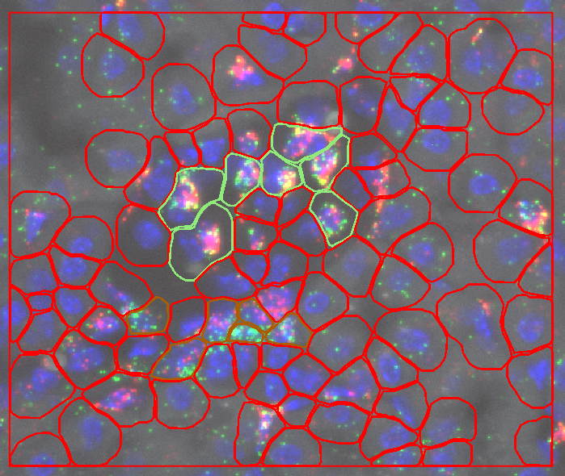
Introduction
The goal of this tutorial is to provide a step-by-step guide to manually annotate cells in QuPath. This tutorial is designed for users who are new to QuPath and want to learn how to manually annotate cells in QuPath.
In this tutorial we will show how to setup multiple regions of interest (ROIs) in QuPath and how to manually annotate cells within each ROI. This will enable us to collect data (number of cells, cell shape, channel intensity, etc.) on a cell-by-cell basis and analyze the data using R.
Video of Analysis Steps
Here is a video tutorial that I made of each of the steps of analysis
https://screenrec.com/share/mkX5LSWe7x
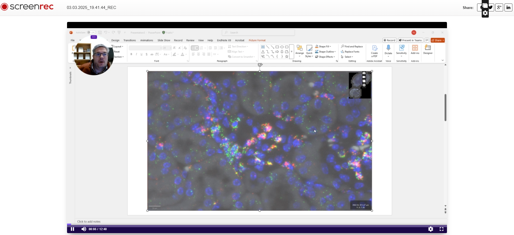
Steps of Analysis
Step 1: Open QuPath

Step 2: Create a New Project

Need to create a new empty folder

Step 3: Drag image file into QuPath


Step 4: Change Image Setting
Default Settings

Using Shift + C
Unselect Opal 520
Change Sample AF to White: left click on color-square
Change Opal 570 to Green: left click on color-square

View after zooming in on Glomerulus
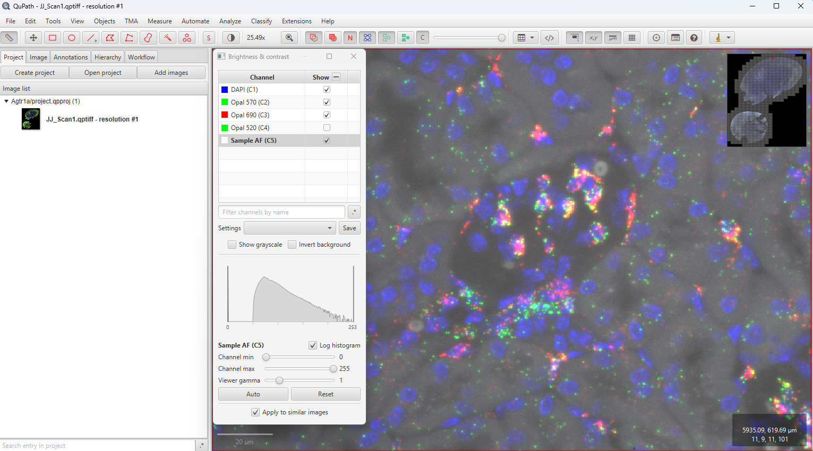
Step 5: Draw ROI
Super-important!!!
Can’t do any analysis without defining ROI
This is using the simple rectangle tool
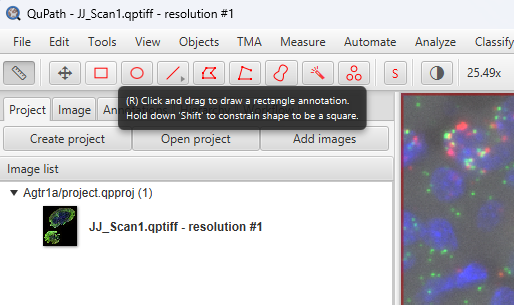
Active ROI is outlined in Yellow
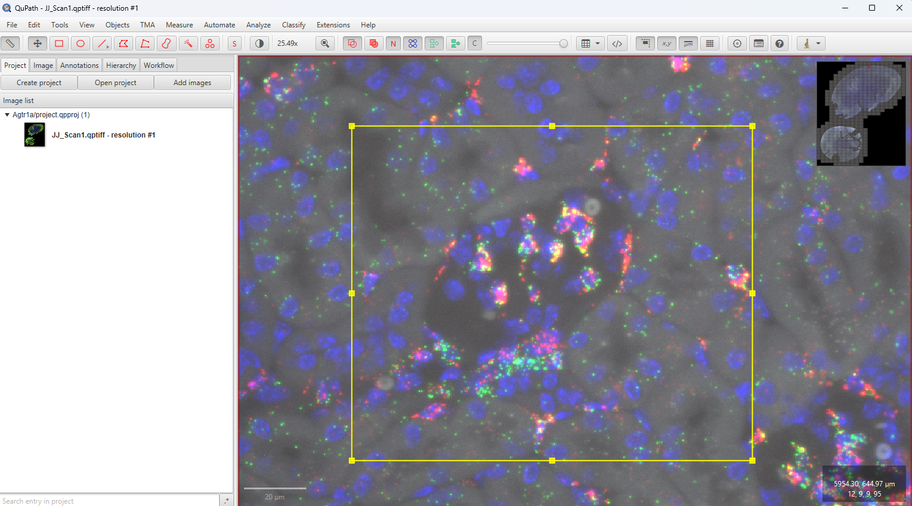
Step 6: Cell Detection
Super-important!!!
Rest of analysis depends on cell annotations
Analyze > Cell detection > Cell detection
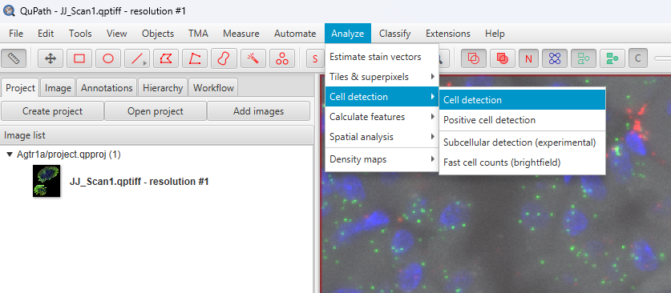
Most of the time default settings ok
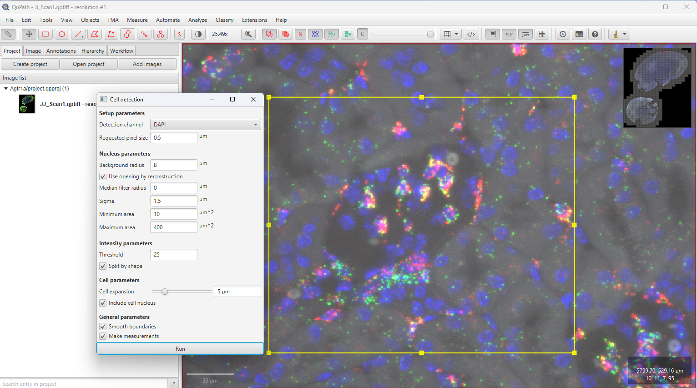
But double check after outlining detections
Are there phantom cell detections?
Are the majority of cells not detected?
If so, then tweek Cell detection settings
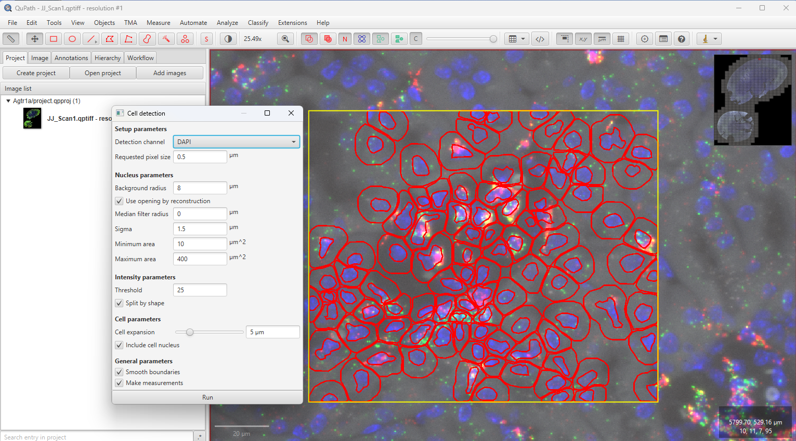
I change the settings to remove nuclei outline
Right click > Cells > Cell boundries only
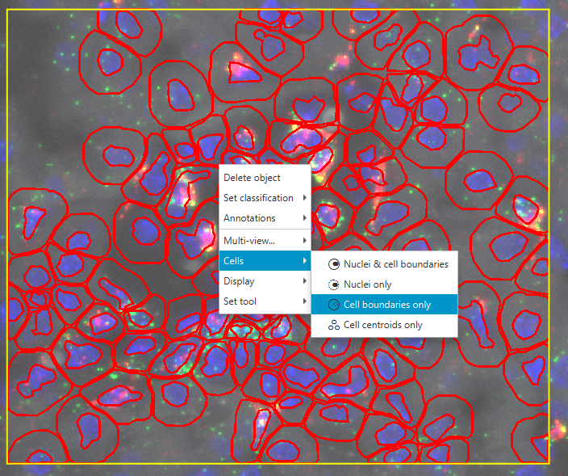
Step 7: Select Cells
Double click on cell to select and then hold down ctrl to select multiple cells
Click on Annotation Tab
Add new class if nessesary
Right click > Add/Remove > Add class
click on Set selected
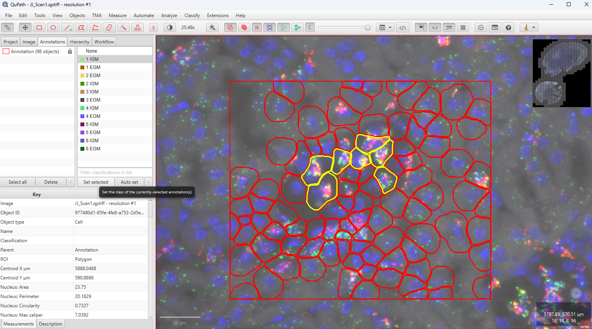
After selection set the cells should be the color of the class (pale green)
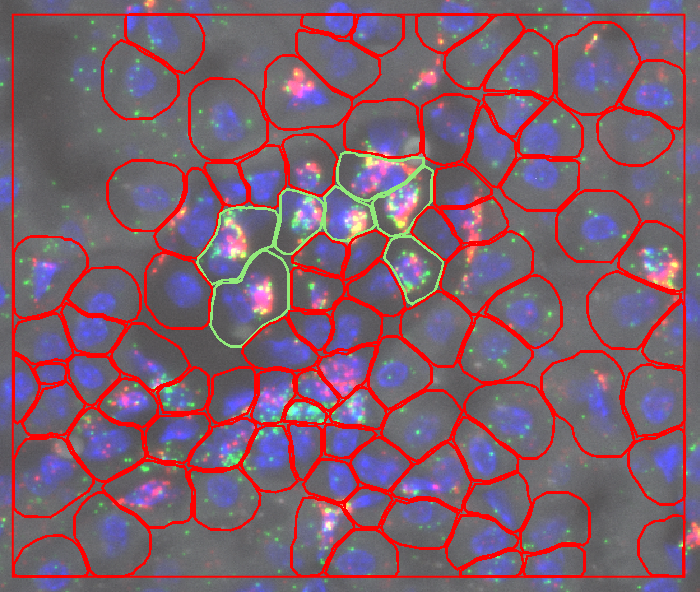
Repeat for another class (brown)
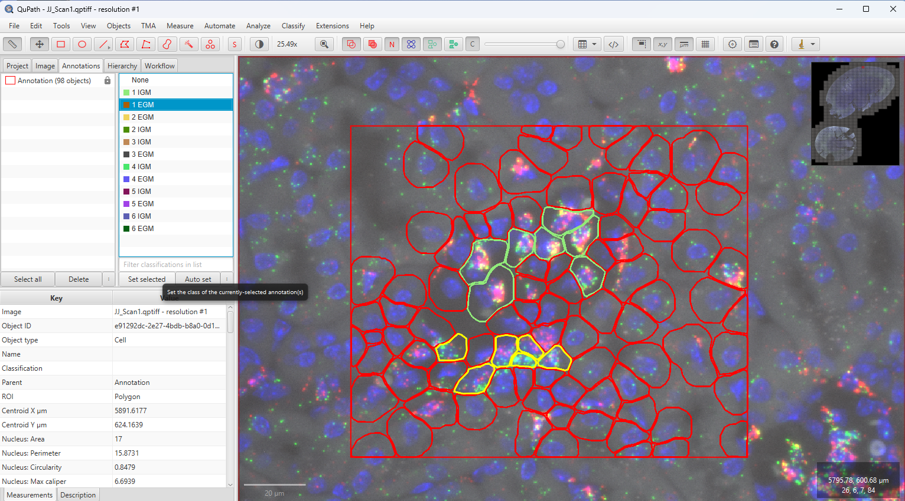
After second selection
Step 8: Repeat
Repeat the previous steps for multiple ROI’s in the image
For kidney RNAscope I’d like between 10-20 ROI’s of glomeruli
Step 9: Export the Data
Click on Show detection measurements
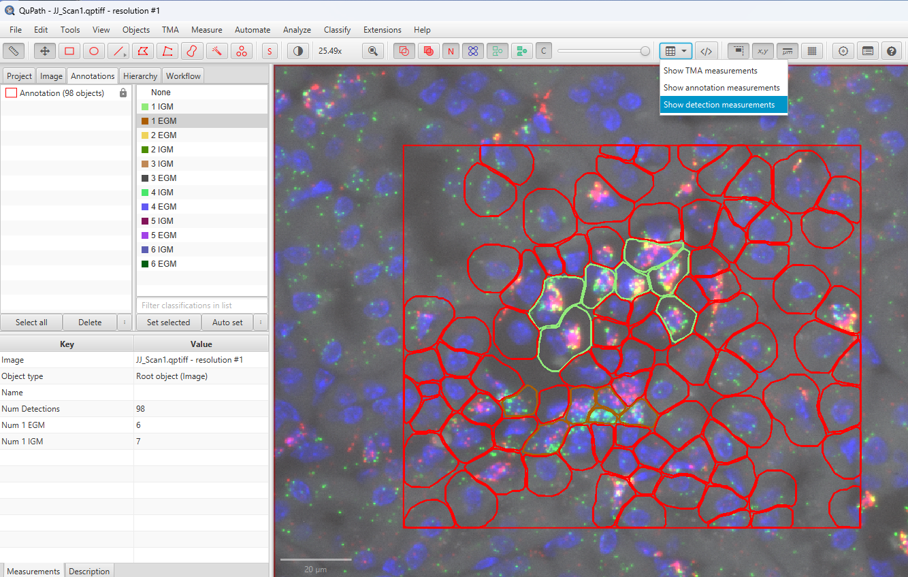
This pane shows the cells and measurements
Can click on a cell in QuPath (yellow) and it will highlight in the pane
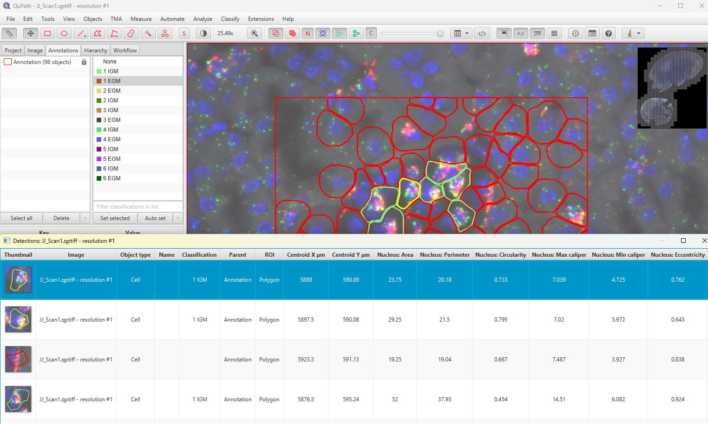
Click on Save to save the data
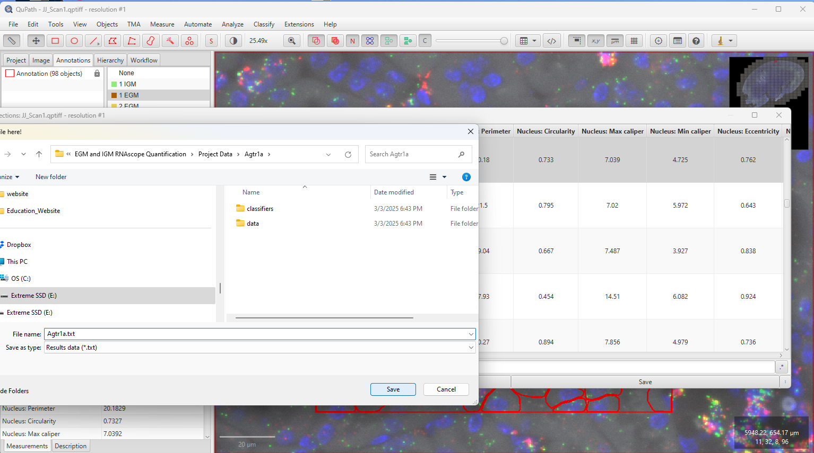
The data is saved as a text file (.txt)
From here we can upload into R and analyze the data
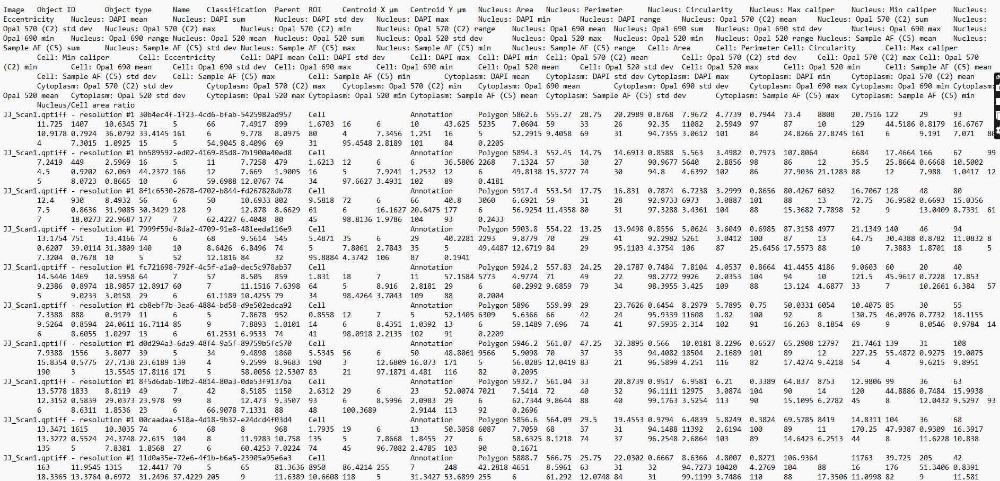
Step 10: Save Project
File > Save As
Super-important!!!
We need to document our analysis for reproducibility
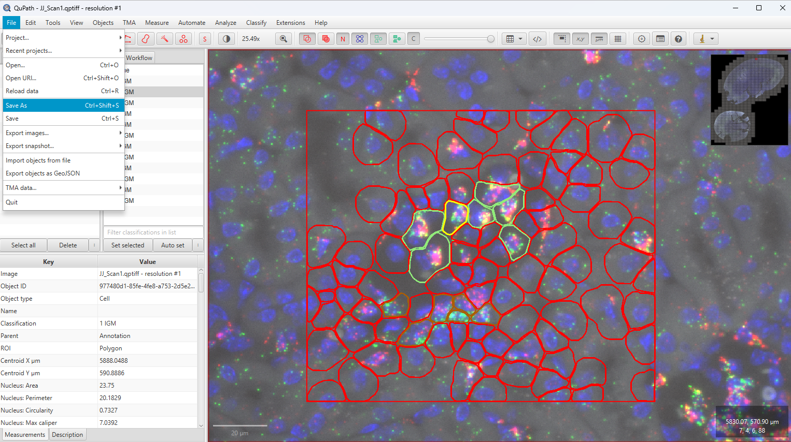